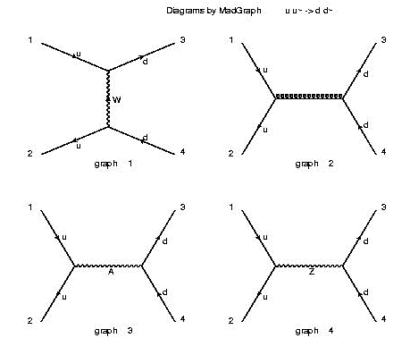
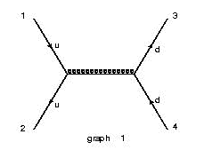
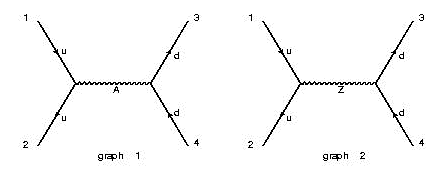
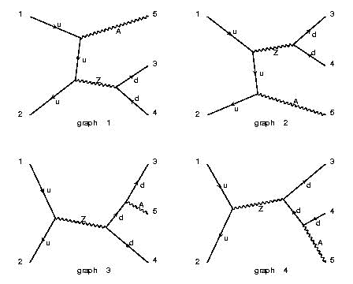
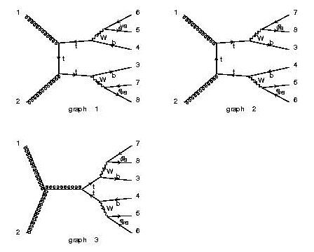
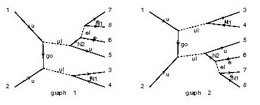

| PROCESS | QCD | QED | Sample Diagram | Notes |
|---|---|---|---|---|
| uu~ > dd~ | 99 | 99 |  | Both the QCD and QED are set to the a maximum conventional value of 99. This entails that all the possible contributions (W,gluon,photon,Z) appear. In total 4 diagrams appear. |
| uu~ > dd~ | 99 | 0 |  | The maximum number of QED couplings is set to zero so only QCD is on. The QED contributions (W,photon,Z) are now off. |
| uu~ > dd~ /w+ | 0 | 99 |  | The maximum number of QCD couplings is set to zero, and the contribution from an internal W+ (or W-) are eliminated. As a result only the contributions from the exchange of a photon and a Z appear. |
| uu~ > z > dd~a | 0 | 99 |  | The maximum number of QCD couplings is set to zero, and the presence of a Z in an s-channel diagram is requested. As a result possible contributions from the exchange of a W in the t-channel or a photon in the s-channel are excluded. |
| gg > tt~ > b b~ e+ e- ve~ ve | 02 | 04 |  | This is t tbar production with semileptonic decays for both tops. The maximum number of QCD couplings is set to 2 and the QED is set to 4 (even though in this specific case 99 for both would have given the same result). The requirement of having the two top on-shell, avoids the generation of non resonant contributions such as gg>bb~ZZ with the subsequent decays of the Z's, giving in total 203 diagrams instead of just 3. |
| uu > (ul>u n1)(ul>u(n2>e+(el->e-n1)) | 02 | 04 |  | SUSY u squark pair production, with different decay of the two squarks. Only diagrams compatible with the chosen decay chain are generated. |
| PROCESS | QCD | QED | Directories | Subprocesses | Notes | |
|---|---|---|---|---|---|---|
| pp > e+ ve | 0 | 2 | Pdxu_e+ve Pudx_e+ve |
d~ u -> e+ ve u d~ -> e+ ve |
s~ c -> e+ ve c s~ -> e+ ve |
The special codes p and j, sum over gluon, and n light quark flavors and their anti_particles, as specified by the option. MadGraph is able to identify and combine explicitly identical subprocesses. |
| pp>W+>l+vljj | 2 | 2 |
Puxu_e+veuxd Puu_e+veud ... |
u~ u -> e+ ve u~ d g g -> mu+ vm s c~ ... |
u~ u -> mu+ vm u~ d g g -> e+ ve s c~ ... |
In this example, W+ + jets production is requested, with the subsequent leptonic decay of the W+. If l=e,mu is chosen in the options, then both possibilities are included. MadGraph is able to identify and combine explicitly identical subprocesses. |